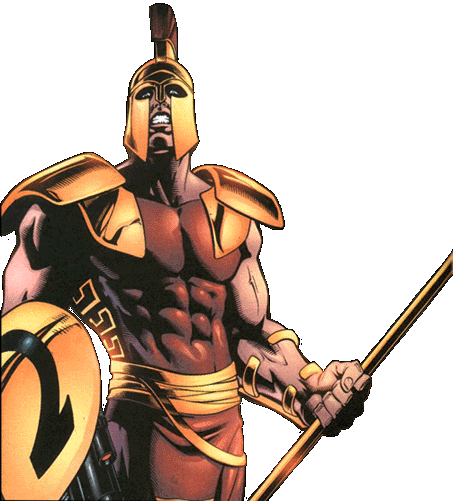

Thanatos
Rick Jones has a dark side. Like nearly all of the Marvel universe's heroic types it seems that Rick Jones has an evil alternate version of himself. That version is Thanatos. Thanatos has managed to tap into the Destiny Force that Rick Jones has briefly used and as they say- power corrupts and absolute power corrupts absolutely.